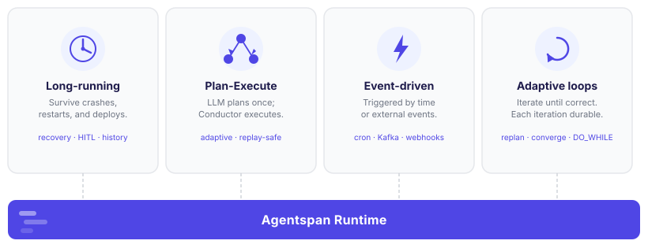

Agentspan¶
Agentspan is now part of Orkes Conductor (2026-08-17)
These docs are frozen. Agentspan merged into Orkes Conductor — new docs live at orkes.io/content/devguide/ai, and existing agents migrate in minutes with the migration guide.
AI agents that don't die when your process does.
Most agent frameworks run the loop in your process. A crash, deploy, or OOM kill loses everything. Agentspan separates your code from execution state — the server holds state, your workers execute tools. Agents survive restarts, pause for human approval indefinitely, and resume at the last completed step.

Why production agents break¶
When an agent loop runs inside your process, six things can go wrong — and they will:
- Process crash mid-run. A long agent run takes minutes. If your process dies, the run is gone. No resume.
- Human approval loses state. Pausing for human input means holding state in memory. A restart kills the pending approval.
- No history. In-process execution leaves no record. You can't query what any agent did, replay a run, or compare models.
- Scaling duplicates state. Multiple machines mean distributed state management — or isolated, uncoordinated agents.
- Scheduling requires external infra. A cron means a separate scheduler, missed-fire handling, and overlap detection — all failure-prone.
- Background jobs vanish. An async agent fired via threading or asyncio dies when your process does.
Agentspan eliminates all six by keeping execution state on the server.
Your process Agentspan server
└── worker └── agent execution
├── registers tools ├── tracks current step
└── executes tool calls ←────── delegates tool work
├── retries on failure
├── holds HITL state
└── stores full history
Your process can crash, restart, or be replaced. The agent keeps running.
Get started in 30 seconds¶
1. Install¶
pip install conductor-agent-sdk
npm install @conductor-oss/conductor-agent-sdk
<!-- Maven -->
<dependency>
<groupId>org.conductoross.conductor</groupId>
<artifactId>conductor-agent-sdk</artifactId>
<version>0.1.0</version>
</dependency>
// Gradle
implementation 'org.conductoross.conductor:conductor-agent-sdk:0.1.0'
dotnet add package conductor-agent-sdk
# Cargo.toml — not yet published
# [dependencies]
# conductor-agent-sdk = "0.1"
Star the repo to be notified when Rust support ships.
# Gemfile — not yet published
# gem 'conductor-agent-sdk'
Star the repo to be notified when Ruby support ships.
2. Set your LLM key¶
export OPENAI_API_KEY=sk-... # OpenAI
# or
export ANTHROPIC_API_KEY=sk-ant-... # Anthropic
3. Start the server¶
agentspan server start
Downloads and starts the Agentspan runtime on http://localhost:6767. First run fetches the JAR (~50 MB); subsequent starts use the cache.
4. Run your first agent¶
from conductor.ai.agents import Agent, AgentRuntime, tool
@tool
def get_weather(city: str) -> str:
"""Get current weather for a city."""
return f"72°F and sunny in {city}"
agent = Agent(
name="weatherbot",
model="openai/gpt-4o",
instructions="You are an outdoor activity assistant. Look up the weather, then recommend activities.",
tools=[get_weather],
)
with AgentRuntime() as runtime:
result = runtime.run(agent, "What should I do today in NYC?")
result.print_result()
import { Agent, AgentRuntime, tool } from '@conductor-oss/conductor-agent-sdk';
const getWeather = tool(
async ({ city }: { city: string }) => `72°F and sunny in ${city}`,
{ name: 'get_weather', description: 'Get current weather for a city',
inputSchema: { type: 'object', properties: { city: { type: 'string' } }, required: ['city'] } }
);
const agent = new Agent({
name: 'weatherbot',
model: 'openai/gpt-4o',
instructions: 'You are an outdoor activity assistant. Look up the weather, then recommend activities.',
tools: [getWeather],
});
const runtime = new AgentRuntime();
const result = await runtime.run(agent, 'What should I do today in NYC?');
result.printResult();
await runtime.shutdown();
import org.conductoross.conductor.ai.Agent;
import org.conductoross.conductor.ai.AgentRuntime;
import org.conductoross.conductor.ai.tool.Tool;
public class Weatherbot {
@Tool(description = "Get current weather for a city")
public String getWeather(String city) {
return "72°F and sunny in " + city;
}
public static void main(String[] args) throws Exception {
Weatherbot wb = new Weatherbot();
Agent agent = Agent.builder()
.name("weatherbot")
.model("openai/gpt-4o")
.instructions("You are an outdoor activity assistant. Look up the weather, then recommend activities.")
.tools(wb)
.build();
try (AgentRuntime runtime = new AgentRuntime()) {
var result = runtime.run(agent, "What should I do today in NYC?");
System.out.println(result.getOutput());
}
}
}
using Conductor.AI;
var agent = new Agent(new AgentConfig {
Name = "weatherbot",
Model = "openai/gpt-4o",
Instructions = "You are an outdoor activity assistant. Look up the weather, then recommend activities.",
Tools = [
Tool.From((string city) => $"72°F and sunny in {city}",
name: "get_weather",
description: "Get current weather for a city")
]
});
await using var runtime = new AgentRuntime();
var result = await runtime.RunAsync(agent, "What should I do today in NYC?");
Console.WriteLine(result.Output);
Open http://localhost:6767 to see the execution in the visual UI.
The four production patterns¶
Long-running agents¶
Execution state lives on the server, not in your process. Workers connect, run tool calls, and disconnect — the server tracks every step. A crash mid-run resumes at the last completed step when a worker reconnects. Human approval pauses indefinitely with no in-memory state at risk.
agent = Agent(
name="researcher",
model="anthropic/claude-sonnet-4-6",
instructions="Research the topic thoroughly. Use all available tools.",
tools=[web_search, read_page, write_report],
)
# Even if this process crashes, the agent resumes on reconnect
with AgentRuntime() as runtime:
result = runtime.run(agent, "Write a report on LLM inference optimization")
Dynamic plan-execute¶
The LLM plans once; Conductor executes deterministically. A planner agent emits a JSON task graph. The server compiles it into an immutable sub-workflow — parallelism is FORK_JOIN, branching is SWITCH, retries cost zero tokens. See Plan-Execute.
from conductor.ai.agents import plan_execute
harness = plan_execute(
name="report_generator",
tools=[create_dir, write_section, assemble, check_length],
planner_instructions="Plan a 3-section report on the topic.",
fallback_instructions="Fix what the deterministic plan couldn't.",
)
result = runtime.run(harness, "AI agents in 2025")
Event-driven agents¶
Attach cron schedules at deploy time. Connect to Kafka, SQS, AMQP, webhooks, or any Conductor event source — every execution fully recorded with inputs, outputs, and per-step timing. See Scheduling.
from conductor.ai.agents import Schedule
agent = Agent(
name="daily_digest",
instructions="Summarize the top news for today.",
tools=[fetch_news, send_email],
schedules=[Schedule(name="morning", cron="0 9 * * *")],
)
runtime.deploy(agent) # registers the schedule; server fires it every day at 9 AM
Adaptive loops¶
Any framework can loop. Only Agentspan makes each iteration a durable, observable workflow — crash mid-loop and resume at the current iteration, not from scratch. Combine Plan-Execute for deterministic inner execution with an adaptive outer loop that converges based on verified results. See Adaptive Loops.
from conductor.ai.agents import Agent, AgentRuntime
agent = Agent(name="travel_planner", instructions="Output itineraries as JSON.", ...)
failures = []
with AgentRuntime() as runtime:
for iteration in range(max_iterations):
prompt = build_prompt(destination, daily_budget, failures)
result = runtime.run(agent, prompt) # durable workflow — survives crashes
itinerary = extract_json(result)
failures = verify_constraints(itinerary) # deterministic — no LLM
if not failures:
print(f"✓ All constraints passed in {iteration + 1} iteration(s)")
break
# Exact failure messages feed into the next prompt
Each runtime.run() is a durable Conductor workflow — every iteration observable in the UI, resumable on crash, and fully logged.
See examples/118_adaptive_loop_showcase.py — a runnable travel planner that loops until budget and structural constraints pass (python 118_adaptive_loop_showcase.py "Tokyo").
Works with your existing framework¶
Pass your existing agent directly to runtime.run(). Your code is unchanged.
# LangGraph
from langgraph.prebuilt import create_react_agent
graph = create_react_agent(model, tools)
result = runtime.run(graph, prompt)
# OpenAI Agents SDK
from agents import Agent as OAIAgent
agent = OAIAgent(name="helper", instructions="...", tools=[...])
result = runtime.run(agent, prompt)
# Google ADK
from google.adk.agents import LlmAgent
agent = LlmAgent(name="helper", instruction="...", tools=[...])
result = runtime.run(agent, prompt)
Go deeper¶
-
Why Agentspan
Why conventional frameworks fail in production, and how Agentspan's server-side execution model solves it.
-
Plan-Execute
The LLM plans once; Conductor executes deterministically. No tokens on retries, parallelism, or branching.
-
SDK Reference
Python, TypeScript, Java, and C# — full API reference, examples, and framework integration guides.
-
Examples
Production-shape examples: support triage, research pipelines, HITL workflows, LangGraph bots.
-
Adaptive loops
Durable iterative agents — each iteration a Conductor workflow. Replan based on verified results, converge on goals, and observe every iteration in the UI.